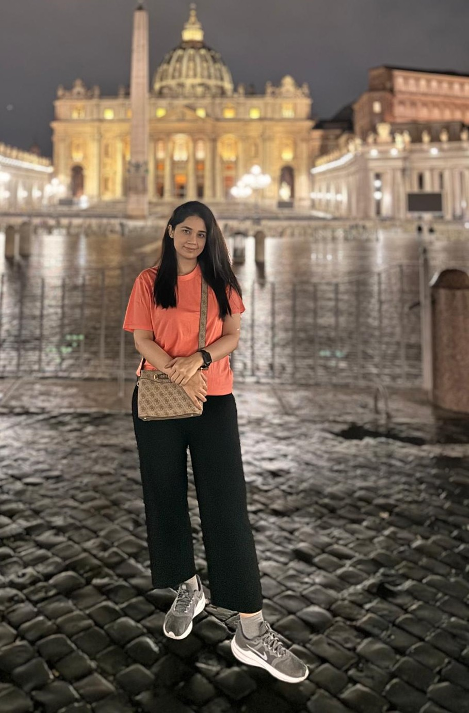
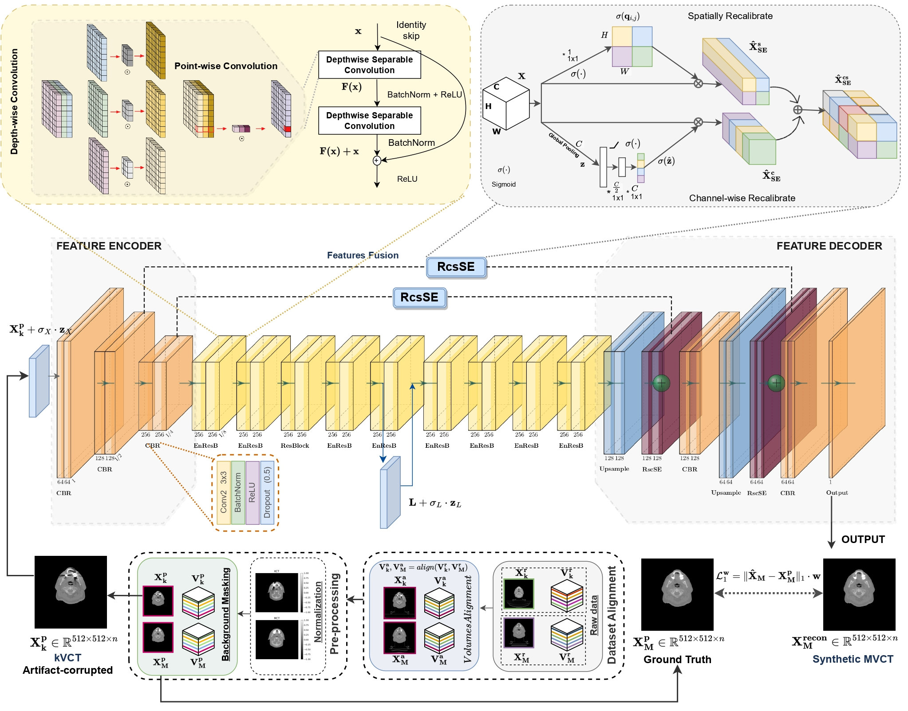
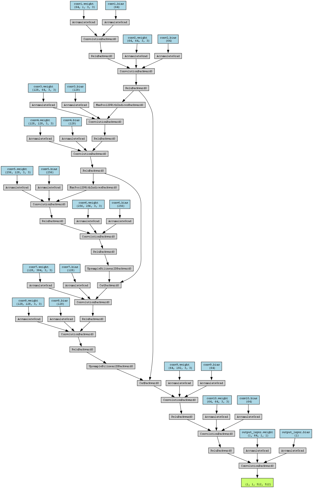
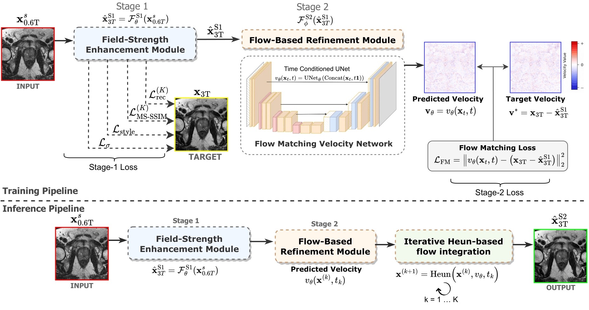
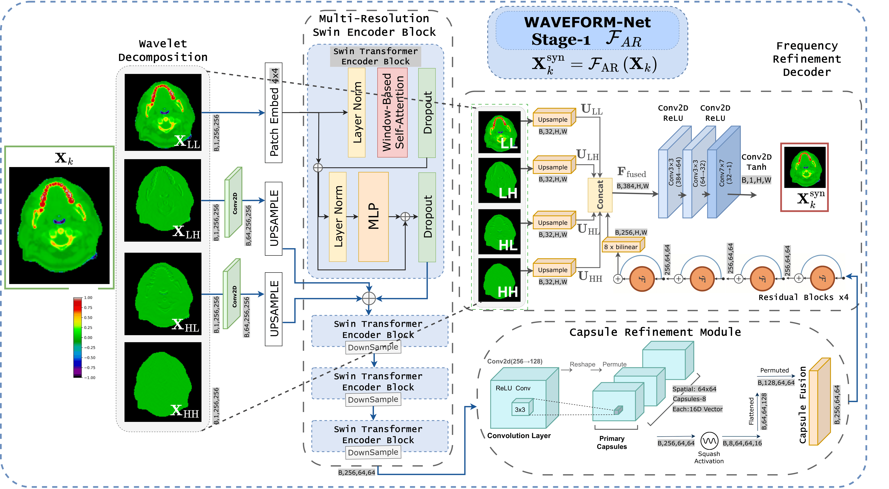
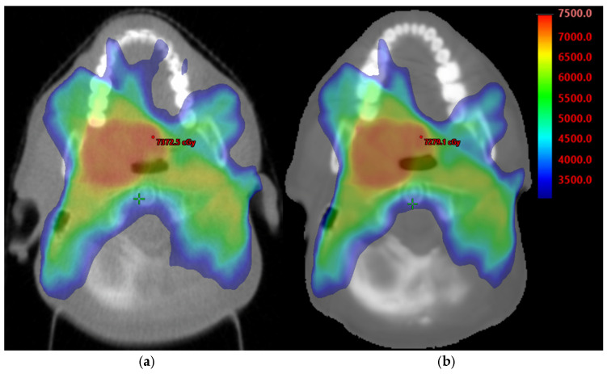
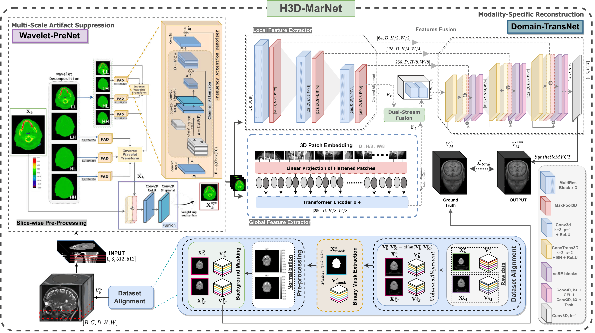
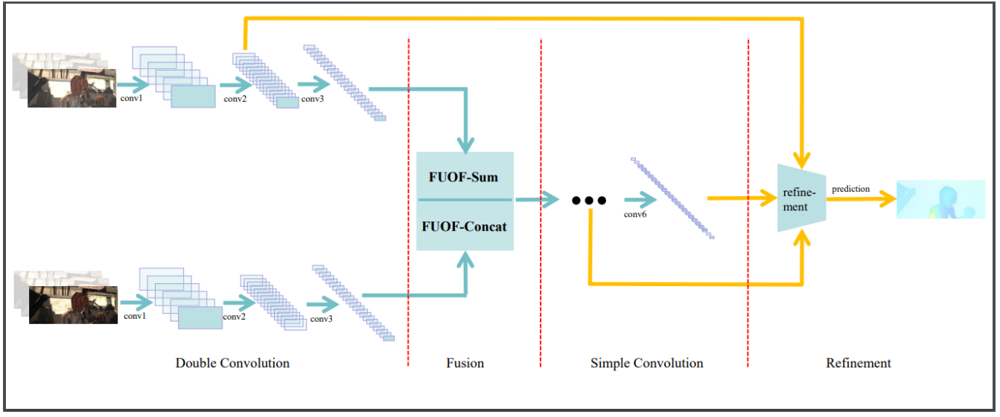

Medical Imaging
AI methods for medical image reconstruction, enhancement, artifact reduction and clinically motivated image analysis.
Artificial Intelligence · Computer Vision · Medical Imaging
AI researcher working at the intersection of deep learning, computer vision, medical imaging, and generative AI.
I recently submitted my PhD thesis in Computer Science and Artificial Intelligence at the University of Udine , Italy. My research focuses on developing AI methods for medical image reconstruction, enhancement, artifact reduction, and cross-modality transformation, with applications in radiotherapy and clinical imaging.

About
My research lies at the intersection of artificial intelligence and medical imaging. I am particularly interested in developing deep learning and generative models that can improve the quality, consistency, and usefulness of medical images.
During my doctoral research, I worked on CT reconstruction, metal artifact reduction, and cross-modality transformation for radiotherapy applications. More recently, I expanded this direction toward MRI enhancement and generative reconstruction during my research stay at LUMC and collaboration with Philips Research.
I enjoy working across disciplines, combining machine learning research with practical medical imaging problems and collaborations involving researchers, clinicians, medical physicists, and technology partners.
Research
My research explores how modern AI methods can be developed for challenging visual and medical imaging problems.
AI methods for medical image reconstruction, enhancement, artifact reduction and clinically motivated image analysis.
Deep learning approaches for image understanding, enhancement, representation learning and visual reconstruction.
Generative and image-to-image learning approaches for cross-modality transformation and data-driven visual synthesis.
Research experience
International collaborations spanning medical imaging, computer vision, radiotherapy and generative AI.
Visiting Researcher
Leiden, Netherlands · LUMC · Philips Research
Research on deep learning methods for low-field to high-field prostate MRI enhancement, with emphasis on generative reconstruction and preservation of anatomical structures.
Research Collaboration
Santiago de Compostela, Spain
Research on metal artifact reduction and CT domain transformation, contributing to AI-based image generation for radiotherapy planning.
Research Collaborator
Aviano, Italy · CRO IRCCS
Collaborative research with oncologists and medical physicists on AI-driven CT reconstruction, metal artifact reduction and kVCT-to-MVCT transformation for radiotherapy.
Research visuals
A visual snapshot of selected projects, architectures, image transformations and research experiments.


Research output
Selected publications and research contributions in medical imaging, computer vision, generative AI and clinically motivated machine learning.

A progressive refinement framework for enhancing low-field MRI while preserving important anatomical structures and image characteristics.

A frequency-aware transformer framework combining wavelet representations with feature fusion for metal artifact reduction and CT domain translation.

Evaluation of synthetic MVCT image quality and its potential for supporting radiotherapy treatment planning in head and neck cancer.

A wavelet-guided dual-path learning framework addressing metal artifact suppression and CT modality transformation for radiotherapy workflows.

A UNet-inspired domain transformation network for generating artifact-free MVCT images from kVCT inputs, combining information from both modalities to improve image quality for radiotherapy planning.

Education
PhD · Artificial Intelligence
Udine, Italy
PhD in Artificial Intelligence and Data Analysis for Personalized Oncology. Thesis submitted in August 2026.
MSc · Software Engineering
Tianjin, China
Master's degree in Software Engineering. Awarded the Tianjin University International Student Scholarship.
BSc · Software Engineering
Rawalpindi, Pakistan
Bachelor's degree in Software Engineering, with a senior design thesis on Android-based indoor navigation and positioning.
Training
MICCAI Society
AI-DLDA · University of Udine
ICVSS · University of Cambridge
University of Udine
DAAD · Summer School for Humans & Technology
Toolkit
Academic activities
Fully funded doctoral fellowship supported by the Italian Ministry of Health in collaboration with the National Cancer Research Institute, CRO IRCCS.
2023International Student Scholarship awarded by Tianjin University for academic excellence.
2017Recipient of the Prime Minister's Best Student Laptop Scheme, Government of Pakistan.
2015Peer-review activities in computer vision, medical imaging and image analysis research.
Beyond research
Soprano singing with the International Students Chorus at Tianjin University.
Volunteer activities supporting students and community initiatives, including work with Esmile Khursheed Welfare and Al-Shifa Eye Trust Hospital.
Research and academic experiences across Italy, the Netherlands, Spain and China.
Contact
I am interested in research collaborations, postdoctoral opportunities, and projects involving machine learning, computer vision and medical AI.